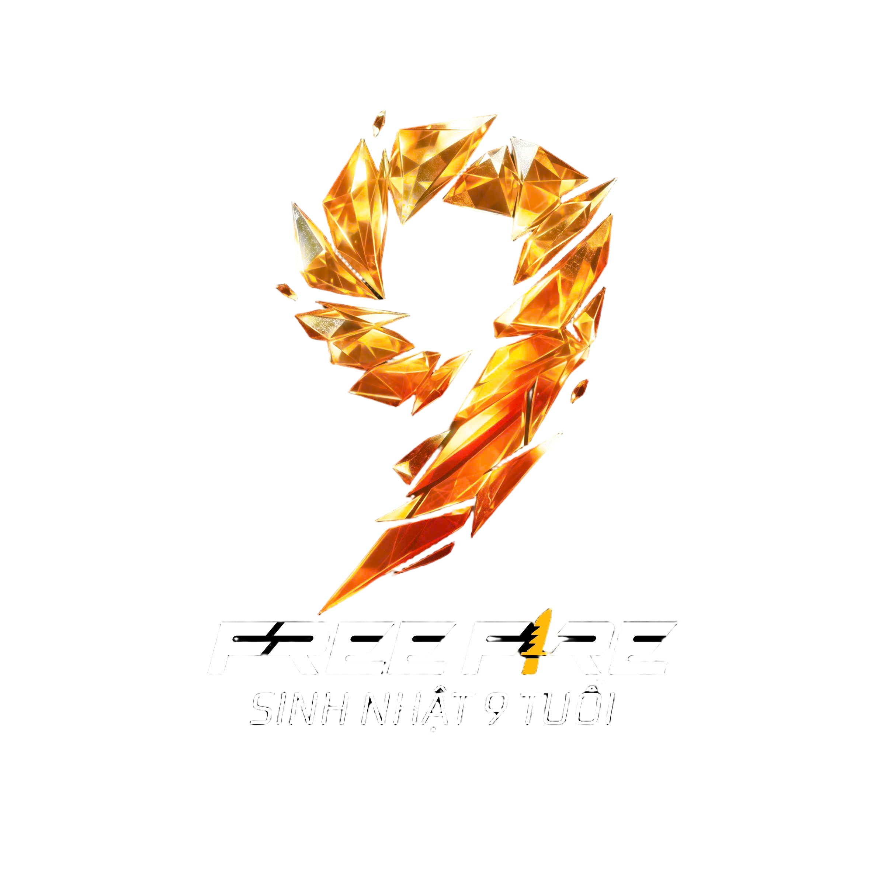
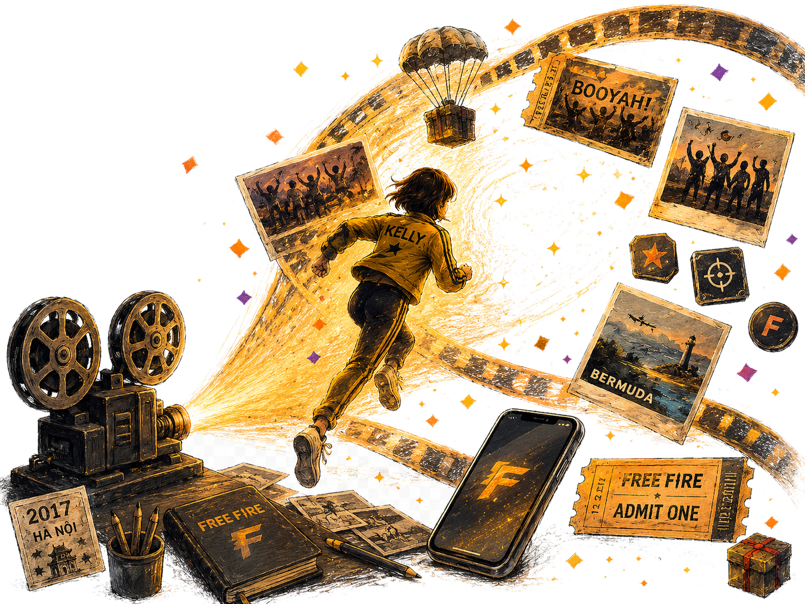
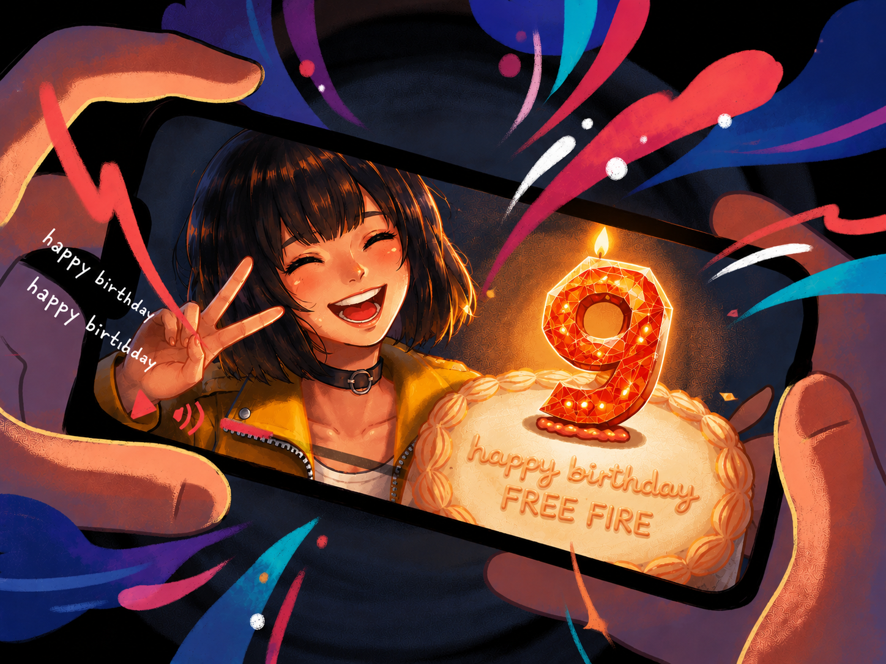
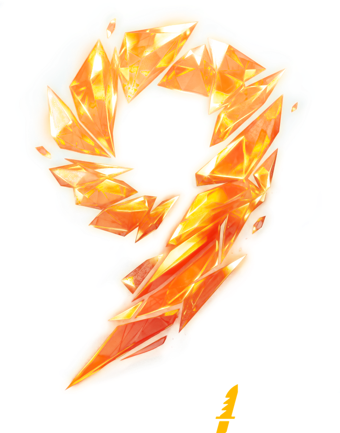

Dài hơn một mối tình đầu.
Đủ để một đứa trẻ lớp 1 bước vào cấp 3.
Đủ để đổi vài chiếc điện thoại.
Và đủ để rất nhiều người lớn lên cùng tôi.
Tôi là Free Fire.
Đây là câu chuyện 9 năm của tôi.
Không chỉ bằng những trận đấu.
Mà bằng những cột mốc khiến cả cộng đồng phải ngoái nhìn.
Và rồi, có những khoảnh khắc rất đời thường…
khi mọi người biết bạn là một phần trong tôi.
Chúng ta vẫn đang giữ chuỗi.
Không chỉ bằng năm tháng.
Mà bằng từng trận đấu, từng người chơi,
và từng cột mốc chúng ta đã đi qua cùng nhau.
Ai mà biết mình sẽ đi xa tới đâu?
Và rồi nhìn lại,
9 năm ấy không chỉ là một hành trình dài —
mà là một hành trình rực sáng.

Happy 9th Birthday, Free Fire.
We made it this far, together.
9 năm giữ chuỗi.
Và chúng ta vẫn còn ở đây.
9 năm có thể là khoảng thời gian ta đã đi được bao lâu.
Và cũng có thể là khoảng cách ta dám đi xa hơn về phía trước.
Happy birthday Free Fire!!

Dành một lời chúc cho chặng đường rực rỡ sắp tới của những người anh em Free Fire nhé!!!
Lời nhắn đã được gửi đi.